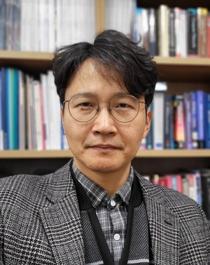
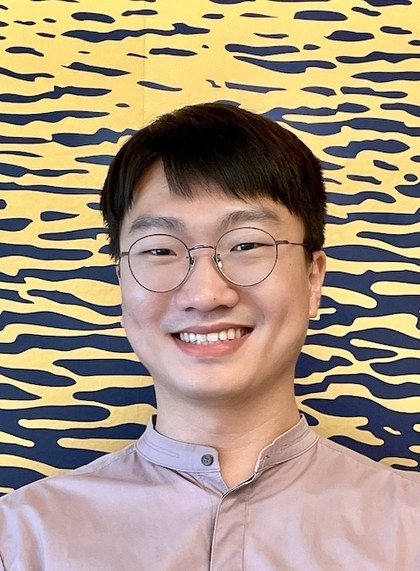
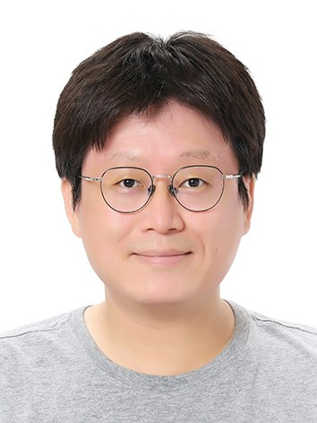
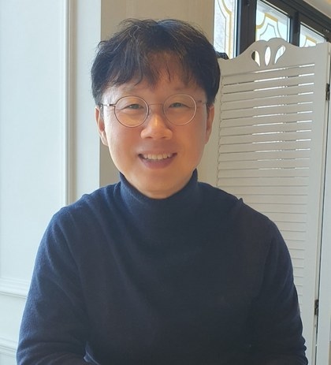

교수진
동남권AI혁신연구센터에는 부산대학교 17명의 교수가 참여하여 3개 트랙의 산학 공동연구와 첨단AI융합학과 교육을 함께 수행합니다.
센터 운영진

- 백윤주 교수 (센터장)
- 소속정보컴퓨터공학부
- 연구분야임베디드시스템, 무선센서네트워크, 온디바이스 AI
- 연구실임베디드시스템연구실(ESLAB)
- 위치IT관(102)-514
- 전화051-510-2599
- 이메일yunju@pusan.ac.kr
- 홈페이지eslab.re.kr
- 김태운 부교수 (부센터장·인재)
- 소속정보컴퓨터공학부
- 연구분야무선네트워크, 사물인터넷, 클라우드·엣지 컴퓨팅
- 연구실연결지능시스템연구실(CIS Lab)
- 위치IT관(102)-619
- 전화051-510-2337
- 이메일taewoon@pusan.ac.kr
- 홈페이지sites.google.com/view/pnu-cis
- 이명호 부교수 (부센터장·산학)
- 소속정보컴퓨터공학부
- 연구분야AR·VR·XR, 디지털 휴먼, 디지털트윈, HCI
- 연구실확장현실 연구실(XR·HCI Lab)
- 위치IT관(102)-510
- 전화051-510-2347
- 이메일myungho.lee@pnu.edu
- 홈페이지sites.google.com/view/xrhci

- 김종덕 교수 (학과장)
- 소속정보컴퓨터공학부
- 연구분야사물인터넷, 스마트공장, 무선·지능형 네트워크
- 연구실지능통신연구실(INC Lab)
- 위치IT관(102)-509
- 전화051-510-3519
- 이메일kimjd@pusan.ac.kr
- 홈페이지pnu-inc.github.io
트랙1 · 스마트 제조 AI
- 김태운 부교수 (부센터장·인재)
- 소속정보컴퓨터공학부
- 연구분야무선네트워크, 사물인터넷, 클라우드·엣지 컴퓨팅
- 연구실연결지능시스템연구실(CIS Lab)
- 위치IT관(102)-619
- 전화051-510-2337
- 이메일taewoon@pusan.ac.kr
- 홈페이지sites.google.com/view/pnu-cis
- 김원석 부교수
- 소속정보컴퓨터공학부
- 연구분야피지컬 AI·로보틱스, 디지털트윈 시뮬레이션
- 연구실디지털트윈 피지컬AI 연구실
- 위치IT관(102)-610
- 전화051-510-2777
- 이메일wonsukkim@pusan.ac.kr
- 홈페이지dtp-lab.github.io

- 전상률 조교수
- 소속정보컴퓨터공학부
- 연구분야컴퓨터비전, 멀티모달 영상 처리·생성, 3D 비전
- 연구실컴퓨터비전연구실(PNU CV Lab)
- 위치IT관(102)-512
- 전화051-510-2423
- 이메일srjeonn@pusan.ac.kr
- 홈페이지pnucvlab.github.io
- 박진선 부교수
- 소속정보컴퓨터공학부
- 연구분야객체 검출·분할, 3D 복원, SLAM
- 연구실시각 지능 및 인지연구실(VIPLab)
- 위치IT관(102)-616
- 전화051-510-2360
- 이메일jspark@pusan.ac.kr
- 홈페이지pnu-viplab.github.io

- 최동희 조교수
- 소속정보컴퓨터공학부
- 연구분야자연어처리, 데이터마이닝, 응용 AI
- 연구실계산언어학 및 지식연구실
- 위치IT관(102)-516
- 전화051-510-2218
- 이메일dchoi@pusan.ac.kr
- 홈페이지sites.google.com/view/pnu-clink
트랙2 · 스마트 항만·해양 AI
- 이명호 부교수 (부센터장·산학)
- 소속정보컴퓨터공학부
- 연구분야AR·VR·XR, 디지털 휴먼, 디지털트윈, HCI
- 연구실확장현실 연구실(XR·HCI Lab)
- 위치IT관(102)-510
- 전화051-510-2347
- 이메일myungho.lee@pnu.edu
- 홈페이지sites.google.com/view/xrhci
- 유영환 교수 (학부장)
- 소속정보컴퓨터공학부
- 연구분야5G·6G 이동통신, 사이버물리시스템, 생성 AI
- 연구실미래 네트워크 & 통신연구실
- 위치IT관(102)-612
- 전화051-510-2485
- 이메일ymomo@pusan.ac.kr
- 홈페이지fnc.pusan.ac.kr

- 송길태 교수
- 소속정보컴퓨터공학부
- 연구분야머신러닝, 생성 AI, 대규모 데이터 분석
- 연구실머신러닝 & 바이오인포매틱스연구실
- 위치IT관(102)-620
- 전화051-510-2425
- 이메일gsong@pusan.ac.kr
- 홈페이지dmb.pusan.ac.kr
- 이도훈 교수
- 소속정보컴퓨터공학부
- 연구분야머신비전, 영상 시맨틱 분석
- 연구실시각정보컴퓨팅연구실(VisBiC)
- 위치IT관(102)-711
- 전화051-510-2491
- 이메일dohoon@pusan.ac.kr
- 홈페이지vb.pusan.ac.kr
트랙3 · 산업 AI 플랫폼
- 백윤주 교수 (센터장)
- 소속정보컴퓨터공학부
- 연구분야임베디드시스템, 무선센서네트워크, 온디바이스 AI
- 연구실임베디드시스템연구실(ESLAB)
- 위치IT관(102)-514
- 전화051-510-2599
- 이메일yunju@pusan.ac.kr
- 홈페이지eslab.re.kr
- 김종덕 교수 (학과장)
- 소속정보컴퓨터공학부
- 연구분야사물인터넷, 스마트공장, 무선·지능형 네트워크
- 연구실지능통신연구실(INC Lab)
- 위치IT관(102)-509
- 전화051-510-3519
- 이메일kimjd@pusan.ac.kr
- 홈페이지pnu-inc.github.io
- 배혜림 교수
- 소속산업공학과
- 연구분야AI, 빅데이터, 프로세스 분석, 스마트 항만·제조
- 연구실BAE Lab
- 위치제10공학관 623호
- 전화051-510-2733
- 이메일hrbae@pusan.ac.kr
- 홈페이지baelab.pusan.ac.kr
- 한준희 부교수 (산업공학과 학과장)
- 소속산업공학과
- 연구분야스마트팩토리, 스마트생산시스템
- 연구실스마트 팩토리 연구실
- 위치제10공학관 525호
- 전화051-510-2334
- 이메일junhan@pusan.ac.kr
- 홈페이지sites.google.com/view/pnusmartfactorylab
- 감진규 부교수
- 소속정보컴퓨터공학부
- 연구분야컴퓨터비전, 의료영상처리, 머신러닝
- 연구실영상계산 및 머신러닝연구실(IC&ML Lab)
- 위치IT관(102)-613
- 전화051-510-2292
- 이메일gahmj@pusan.ac.kr
- 홈페이지jkgahm.github.io
- 박영진 조교수
- 소속정보컴퓨터공학부
- 연구분야컴퓨터그래픽스, 기하모델링, 3D 알고리즘
- 연구실그래픽스 및 기하 처리 연구실
- 위치IT관(102)-611
- 전화051-510-2424
- 이메일youngjinpark@pusan.ac.kr
- 홈페이지pnu-gngp.github.io
- 권용인 조교수
- 소속정보컴퓨터공학부
- 연구분야인공지능 시스템, 임베디드 시스템, AI 반도체, 온디바이스 AI
- 연구실인공지능 시스템 최적화 연구실(SOTA Lab)
- 위치IT관(102)-511
- 전화051-510-2317
- 이메일yongin@pusan.ac.kr
- 홈페이지sota.pusan.ac.kr
- 최윤호 교수
- 소속정보컴퓨터공학부
- 연구분야AI 보안, 클라우드·SW 플랫폼 보안, 블록체인
- 연구실소프트웨어 및 시스템보안 연구실(S3Lab)
- 위치IT관(102)-715
- 전화051-510-2781
- 이메일yhchoi@pusan.ac.kr
- 홈페이지sec.pusan.ac.kr